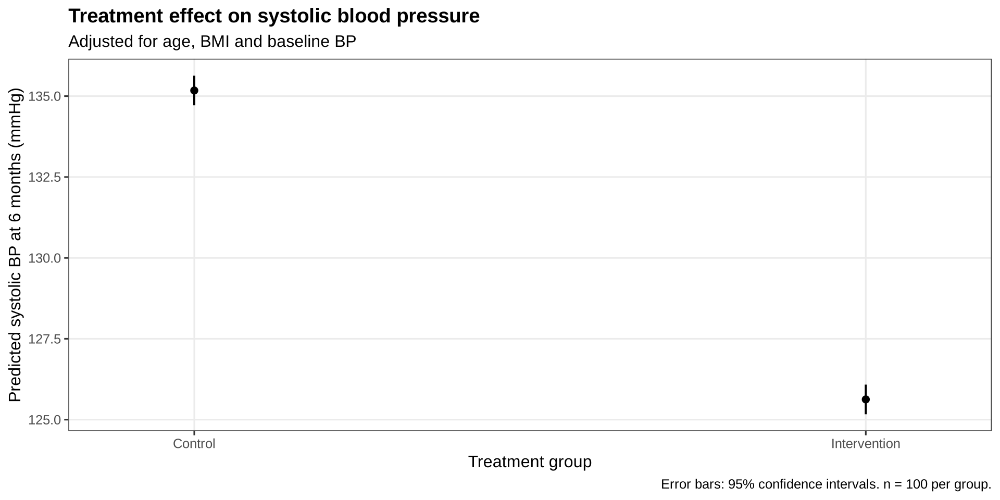

Scenario: Need publication-ready figure for medical journal
Requirements: - High resolution (300 DPI) - Grayscale-friendly - Clear statistical annotations - Professional formatting
Publication Figure - Code
Code
library(readxl); library(ggplot2); library(ggeffects)health_data <-read_excel("../data/PublicHealth_BP_Dataset.xlsx") # 200 simulated patientsmodel <-lm(SysBP_6m ~ TreatmentGroup + Age + BMI + SysBP_0m, data = health_data)effects <-ggpredict(model, terms ="TreatmentGroup")p <-plot(effects, colors ="bw") +labs(title ="Treatment effect on systolic blood pressure",subtitle ="Adjusted for age, BMI and baseline BP",x ="Treatment group", y ="Predicted systolic BP at 6 months (mmHg)",caption ="Error bars: 95% confidence intervals. n = 100 per group.") +theme_bw(base_size =12) +theme(plot.title =element_text(face ="bold", hjust =0), panel.grid.minor =element_blank())p
Code
# Save for the journal (in a project: "output/figures/figure1.tiff")ggsave(file.path(tempdir(), "figure1.tiff"), p, width =7, height =5, dpi =300, compression ="lzw")

Case Study 2: Executive Dashboard
Scenario: Monthly report for C-suite
Requirements: - Key metrics at a glance - Trend over time - Regional breakdown - Action items highlighted
Executive Dashboard Structure
---title: "Q4 2024 Health Outcomes"output: flexdashboard::flex_dashboard: theme: cosmo---# Executive Summary {data-icon="fa-dashboard"}## Row {data-height=150}### Total PatientsvalueBox(2500, icon = "fa-users", color = "primary")### Avg BP Reduction valueBox(-15.3, caption = "mmHg", icon = "fa-arrow-down", color = "success")### Target Achievementgauge(87, min = 0, max = 100, symbol = "%", gaugeSectors(success = c(80, 100), warning = c(60, 80), danger = c(0, 60)))## Row### Trend Over Time(plot showing quarterly BP trends)### Regional Heatmap(choropleth of outcomes by region)
Case Study 3: Exploratory Analysis Report
Scenario: Initial data exploration for research team
Requirements: - Comprehensive EDA - Identify patterns - Flag data quality issues - Generate hypotheses
EDA Report Template
---title: "Exploratory Data Analysis: BP Study"output: html_document: toc: true toc_float: true code_folding: hide---# Data Overview- Summary statistics- Missing data patterns- Outlier detection# Univariate Analysis- Distribution of each variable- Histograms, density plots# Bivariate Analysis- Correlation matrix- Key relationships# Multivariate Patterns- PCA or t-SNE- Clustering analysis# Data Quality Issues- Missing data by group- Potential errors- Recommendations
Case Study 4: Interactive Web App
Scenario: Tool for clinicians to explore patient data
Requirements: - Filter by patient characteristics - Show similar patients - Display trends - Export reports
Clinician Tool - Shiny
ui <-fluidPage(titlePanel("Patient Explorer"),sidebarLayout(sidebarPanel(textInput("patientID", "Enter Patient ID:"),selectInput("metric", "Compare:",choices =c("BP", "Cholesterol", "BMI")),actionButton("find", "Find Similar Patients") ),mainPanel(tabsetPanel(tabPanel("Patient Profile",valueBoxOutput("currentBP"),plotOutput("patientTrend")),tabPanel("Similar Patients",plotOutput("similarScatter"),DTOutput("similarTable")),tabPanel("Predictions",plotOutput("forecastPlot")) ) ) ))server <-function(input, output) {# Reactive logic for patient comparison# Machine learning for similarity# Visualization of results}